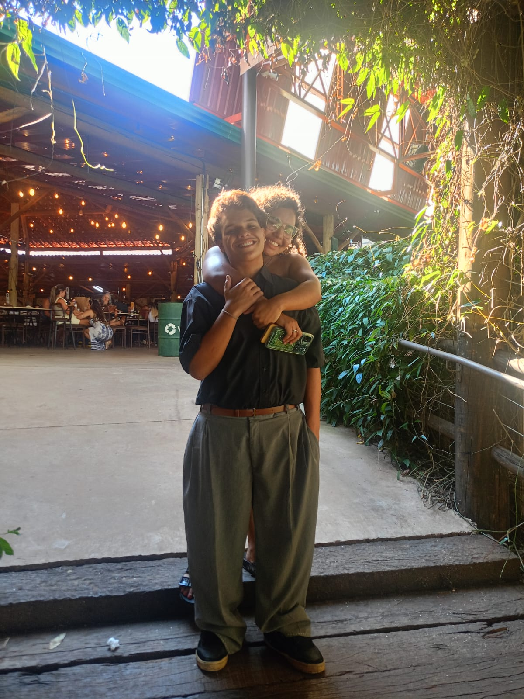
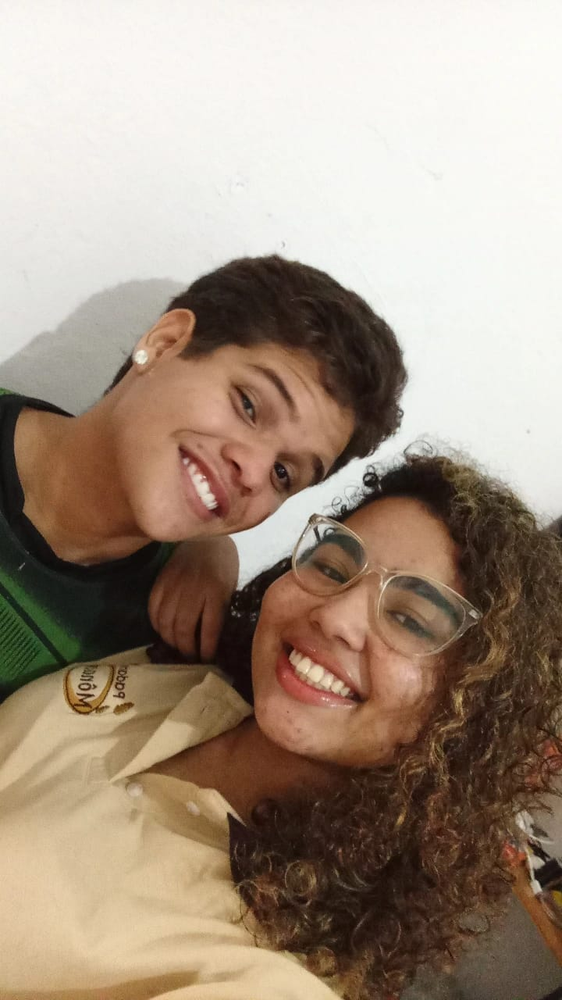
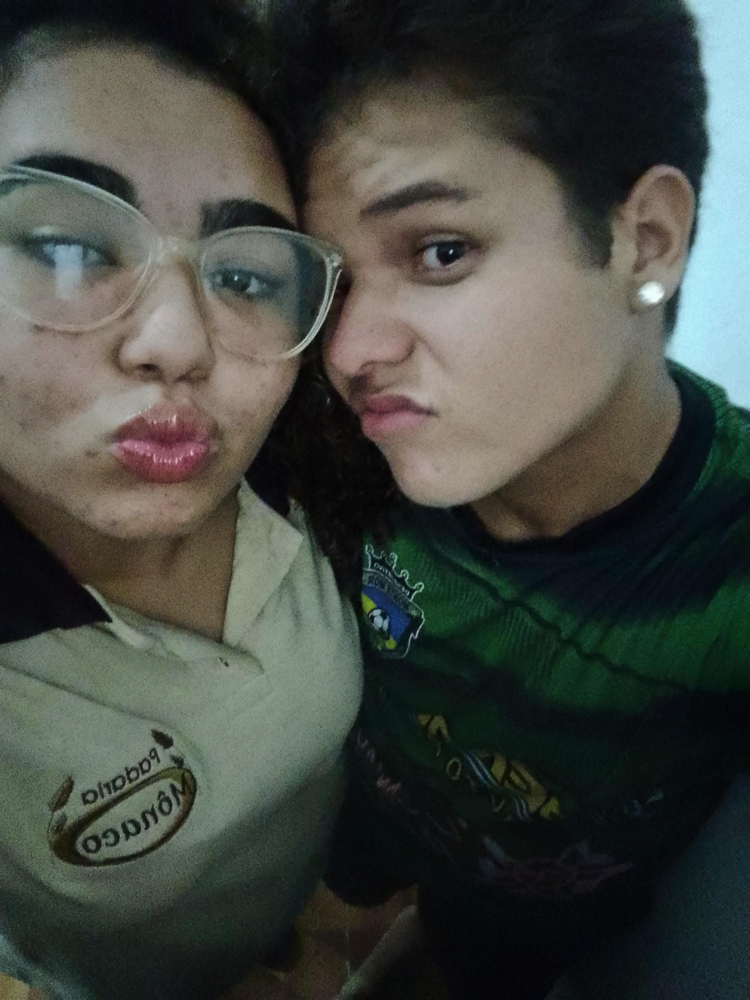
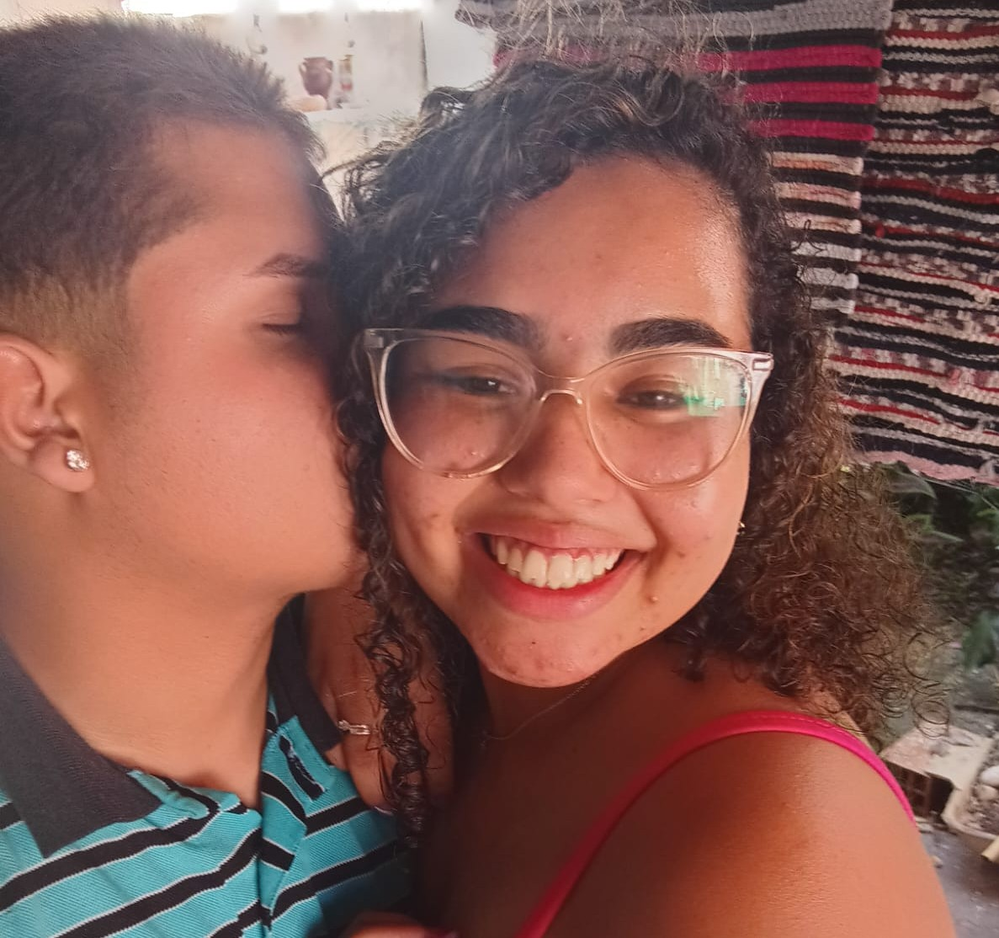

Nossos momentos 📸
Alguns pedacinhos da nossa história. ❤️






Eu fiz esse pequeno pedaço da internet para guardar uma coisa enorme: tudo aquilo que sinto por você.
Abrir minha carta ↓Minha princesa,
Eu poderia escrever páginas e páginas sobre você e ainda sentir que faltou alguma coisa. Talvez porque, quando alguém se torna tão importante, as palavras começam a parecer pequenas demais para carregar tudo aquilo que existe dentro do coração. Mesmo assim, eu quis tentar. Quis transformar um pouco do que sinto em palavras para que você pudesse guardar, voltar aqui quando quiser e lembrar do quanto é amada, admirada e importante para mim.
Desde 23 de novembro de 2025, às 22:35, existe um antes e um depois na minha história. Foi naquele momento que a nossa história começou oficialmente, mas, olhando para tudo que vivemos desde então, parece que aquele horário marcou muito mais do que o começo de um namoro. Marcou o começo de uma das partes mais bonitas da minha vida.
Minha princesa, você é uma mulher incrível. Você é maravilhosa, linda, especial e única, mas o que mais me encanta em você não é apenas aquilo que os olhos conseguem enxergar. É tudo aquilo que existe dentro de você. É a sua essência, a sua maneira de ser, a sua personalidade, o seu coração e a força que existe nessa mulher que eu tenho tanto orgulho de chamar de minha.
Eu admiro profundamente a sua força. Admiro a maneira como você continua seguindo em frente mesmo quando as coisas não são fáceis. Admiro tudo aquilo que você enfrenta, tudo aquilo que aprende, tudo aquilo que supera e, principalmente, a pessoa que você escolhe continuar sendo apesar das dificuldades. Talvez você mesma nem perceba o quanto é forte algumas vezes, mas eu percebo. Eu vejo. E tenho um orgulho imenso de você.
Tenho orgulho da mulher que você é hoje e ainda mais orgulho da mulher que você está se tornando. Tenho orgulho dos seus sonhos, das suas escolhas, da sua coragem, da sua personalidade e de cada pequeno passo que você dá em direção à pessoa que deseja ser. Eu quero estar aqui para ver você crescer, conquistar seus objetivos, realizar seus sonhos e descobrir cada vez mais a mulher extraordinária que existe dentro de você.
Você não precisa ser perfeita para ser admirada por mim. Não precisa acertar sempre, não precisa estar bem todos os dias e não precisa esconder suas inseguranças para ser maravilhosa aos meus olhos. Eu gosto de você por inteira. Gosto da sua alegria, das suas manias, das suas particularidades, das suas opiniões, dos seus jeitos e até daqueles pequenos detalhes que talvez você nem imagine que eu reparo.
Você é linda de uma maneira que vai muito além da aparência. É linda quando sorri, quando fala sobre alguma coisa que gosta, quando fica feliz com algo simples, quando demonstra carinho, quando está concentrada, quando está sendo você sem tentar agradar ninguém. Existe uma beleza em você que não depende de espelho nenhum. É uma beleza que está na sua presença e na forma como você faz o mundo ao seu redor ficar diferente.
E eu quero que você saiba que me sinto muito feliz por poder conhecer cada vez mais essa mulher. Feliz por poder ouvir sua voz, conversar com você, dividir meus pensamentos, contar coisas do meu dia e saber que existe alguém especial do outro lado. Você se tornou aquela pessoa que eu quero procurar quando alguma coisa acontece, seja uma coisa enorme ou uma besteira qualquer. Porque compartilhar a vida com você faz até as pequenas coisas terem outro significado.
Eu amo as nossas conversas. Amo nossas risadas. Amo nossas brincadeiras, nossos momentos e todas aquelas coisas que só fazem sentido porque são nossas. Amo as lembranças que já construímos e gosto ainda mais de pensar nas lembranças que ainda nem existem, mas que um dia vão existir.
Você ocupa um espaço muito especial na minha vida. Não é apenas porque você é minha namorada. É porque você se tornou alguém que eu genuinamente admiro, alguém cuja felicidade importa para mim, alguém que eu quero ver bem, crescendo, sorrindo e realizando tudo aquilo que deseja.
Se algum dia você duvidar de si mesma, eu espero que se lembre de mim dizendo: eu acredito em você. Eu acredito na sua capacidade, na sua força e na mulher maravilhosa que você é. E quando talvez você não consiga enxergar tudo isso em si mesma, espero que consiga lembrar que existe alguém olhando para você e enxergando muito mais do que você imagina.
Eu tenho orgulho de você, minha princesa. Um orgulho que não depende de grandes conquistas. Tenho orgulho de você simplesmente por ser quem é. Tenho orgulho da sua caminhada, da sua coragem e de cada vez que você continua mesmo quando seria mais fácil desistir. Tenho orgulho da sua existência na minha vida.
E se eu pudesse te dar uma certeza para levar para todos os dias que ainda virão, seria esta: você é importante. Você importa. Sua história importa. Seus sonhos importam. Seus sentimentos importam. E para mim, você importa de uma maneira que nenhuma frase bonita conseguiria explicar completamente.
Eu espero que, quando olhar para este site, você não veja apenas uma página na internet. Espero que veja um pedacinho do meu coração. Cada palavra aqui existe porque você existe na minha vida. Cada detalhe foi pensado para você. E cada vez que eu olhar para essa história, vou lembrar que tudo começou naquele dia, naquele horário, com a pessoa que hoje eu tenho a felicidade de chamar de minha princesa.
Eu não sei exatamente quantos momentos ainda teremos pela frente. Não sei quantas fotografias ainda vamos tirar, quantas risadas ainda vamos dar, quantas conversas ainda vamos ter ou quantas lembranças ainda vamos criar. Mas eu sei que sou muito grato por tudo que já vivemos e muito feliz por saber que ainda existe tanta história para construir.
Quero continuar conhecendo você. Quero continuar admirando você. Quero continuar vendo você crescer e se tornar cada vez mais a mulher incrível que já é. Quero continuar guardando nossas lembranças e criando novas. Quero continuar tendo motivos para olhar para você e pensar: “que sorte a minha.”
Obrigado por ser você. Obrigado por existir. Obrigado por cada sorriso, cada palavra, cada carinho, cada conversa e cada momento. Obrigado por ter entrado na minha vida e por ter feito dela um lugar mais bonito.
Minha princesa, eu espero que você nunca se esqueça de uma coisa: eu tenho um orgulho enorme de você, admiro profundamente a mulher que você é e sou muito feliz por poder viver essa história ao seu lado.
Eu te amo. E, se depender de mim, ainda teremos muitos motivos para voltar aqui e lembrar de tudo que começou naquela noite de 23 de novembro.
Jão Bobão ❤️
Desde 23/11/2025 às 22:35, cada segundo faz parte da nossa história.
Alguns pedacinhos da nossa história. ❤️




Hoje, amanhã e em cada lembrança bonita que ainda vamos construir.